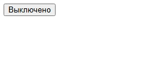
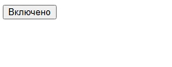
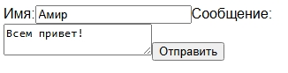
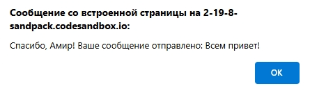

Создание интерактивных веб-приложений с React
Введение в интерактивность
React позволяет создавать веб-приложения, которые реагируют на действия пользователя, такие как клики, ввод текста, наведение мыши и т.д. Интерактивность достигается за счет использования состояния (state) и обработчиков событий.
Пример: Простой переключатель
Этот пример показывает, как создать компонент переключателя, который изменяет текст при клике.
import React, { useState } from 'react';
function Toggle() {
const [isOn, setIsOn] = useState(false);
const handleClick = () => {
setIsOn(!isOn);
};
return (
<button onClick={handleClick}>
{isOn ? 'Включено' : 'Выключено'}
</button>
);
}
export default Toggle;
Пояснения:
useState: Хук, позволяющий добавить состояние в функциональный компонент.handleClick: Функция, которая вызывается при клике на кнопку и изменяет состояниеisOn.- Тернарный оператор:
isOn ? 'Включено' : 'Выключено'определяет, какой текст отображать на кнопке.
Как это выглядит
 Пример: Форма обратной связи
В этом примере показано, как создать форму обратной связи, которая позволяет пользователю вводить текст и отправлять его.
import React, { useState } from 'react';
function FeedbackForm() {
const [name, setName] = useState('');
const [message, setMessage] = useState('');
const handleSubmit = (event) => {
event.preventDefault(); // Предотвращаем перезагрузку страницы
alert(`Спасибо, ${name}! Ваше сообщение отправлено: ${message}`);
};
return (
<form onSubmit={handleSubmit}>
<label>
Имя:
<input
type="text"
value={name}
onChange={(e) => setName(e.target.value)}
/>
</label>
<label>
Сообщение:
<textarea
value={message}
onChange={(e) => setMessage(e.target.value)}
/>
</label>
<button type="submit">Отправить</button>
</form>
);
}
export default FeedbackForm;
Пояснения:
useStateиспользуется для хранения значений полей формы (имя и сообщение).onChange: Обработчик событий, который вызывается при изменении значения в поле формы и обновляет состояние.handleSubmit: Функция, которая вызывается при отправке формы и обрабатывает данные.event.preventDefault(): Предотвращает стандартное поведение формы (перезагрузку страницы).
Как это выглядит
 Пример: Список задач (Todo List)
Этот пример показывает, как создать простой список задач, который позволяет добавлять, удалять и отмечать задачи как выполненные.
import React, { useState } from 'react';
function TodoList() {
const [tasks, setTasks] = useState([]);
const [newTask, setNewTask] = useState('');
const handleInputChange = (event) => {
setNewTask(event.target.value);
};
const handleAddTask = () => {
if (newTask.trim() !== '') {
setTasks([...tasks, { id: Date.now(), text: newTask, completed: false }]);
setNewTask('');
}
};
const handleCompleteTask = (id) => {
setTasks(tasks.map(task =>
task.id === id ? { ...task, completed: !task.completed } : task
));
};
const handleDeleteTask = (id) => {
setTasks(tasks.filter(task => task.id !== id));
};
return (
<div>
<input
type="text"
value={newTask}
onChange={handleInputChange}
placeholder="Добавить задачу"
/>
<button onClick={handleAddTask}>Добавить</button>
<ul>
{tasks.map(task => (
<li key={task.id}>
<span style={{ textDecoration: task.completed ? 'line-through' : 'none' }}>
{task.text}
</span>
<button onClick={() => handleCompleteTask(task.id)}>
{task.completed ? 'Снять' : 'Выполнить'}
</button>
<button onClick={() => handleDeleteTask(task.id)}>Удалить</button>
</li>
))}
</ul>
</div>
);
}
export default TodoList;
Пояснения:
tasks: Состояние для хранения списка задач.newTask: Состояние для хранения текста новой задачи.handleInputChange: Обработчик для обновленияnewTaskпри вводе текста.handleAddTask: Функция для добавления новой задачи в список.handleCompleteTask: Функция для отметки задачи как выполненной.handleDeleteTask: Функция для удаления задачи из списка.tasks.map: Используется для отображения списка задач.
Как это выглядит